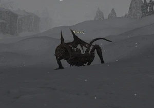

Level 75 reference · Zenith rules
|
Notorious Monster |
 |

| Zone | Level | Drops | Steal | Spawns | Notes |
|---|---|---|---|---|---|
| Xarcabard | 70 | 1 | A, L | ||
|
HP = Detects Low HP; M = Detects Magic; Sc = Follows by Scent; T(S) = True-sight; T(H) = True-hearing JA = Detects job abilities; WS = Detects weaponskills; Z(D) = Asleep in Daytime; Z(N) = Asleep at Nighttime | |||||
Notes
- Spawns from the death of the Shadow Dragon at (H-9), every 21-24 hours.
- Uses Thornsong, Wind Breath, and Petro Eyes (Dragon special attacks) and has an Additional Effect of Terror on normal attacks.
- Is able to intimidate players. This effect is exceptionally strong.
- Can be defeated by a party of 4 characters at level 70; Duoable by a Ninja and White Mage at level 75; Soloable by Red Mage at level 75 and Summoner at level 70
Adapted from Eden Wiki: Biast · Contributors and history · CC BY-SA 4.0. Revision 46750. Layout, links and optional background text adapted for Zenith.